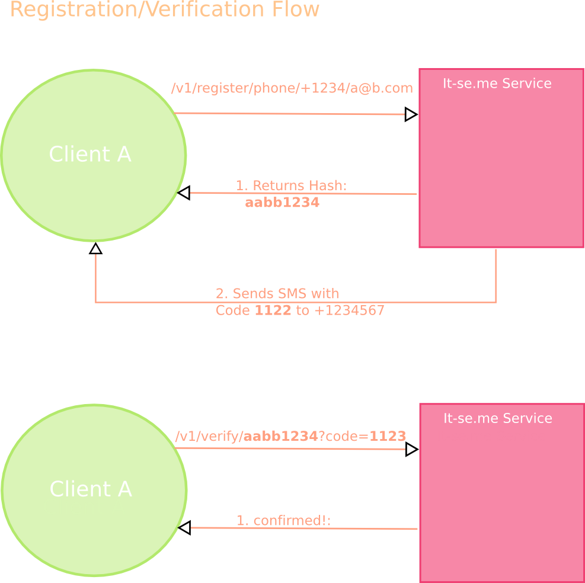
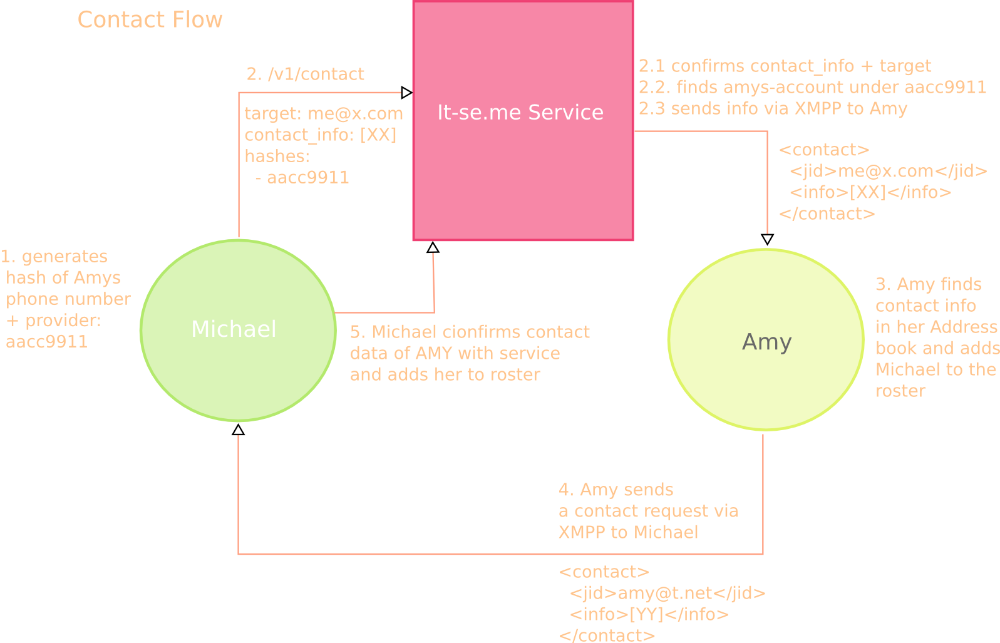

The Concept¶
So, then how can you share your contact details without even the server storing them for longer than needed to authenticate them? And more-over, how can another client request permission to contact a third party through this services without leaking privacy details about the other person?
Scenario setting¶
In order to create secure and privacy concerned system we’ve set out to create a concept for contact details interchange through a trusted instance under the following conditions:
the service acts a trusted middle man
as of that all contact details need to be authenticated against that service
- but as also a trusted middle mans security can be breached
the service shall know as little privacy concerning data as possible, specifically it shall not know which email belongs to which account
a third party shall be able to authenticate itself against that service with one or multiple contact details and through that authenticating be able to deposit a target-address others shall be forwarded to in case of a match
when a third party wants to connect with other people, it shall be able to do so without leaking their own address-book of contacts
if a match is found, the deposited account shall be informed about said request by forwarding their own authenticated details
that account can then match those account details against their own database and decide to act accordingly
Set up¶
The way we’ve implemented this is by using extensive hashing (SHA512) for account information storage. Meaning, that the contact request details will be hashed and the deposited account will be linked to it once authentication of that channel is done.
Registration and Authentication¶
Let’s look how this works. Let’s say Amy is starting a new instance of her ChatSecure and want to connect with her friends already stored on her phone. The first thing the App will do is prompt Amy to authenticate various contact channels of her own. For example her phone number. For that the App sends a registration request with the medium phone and the specific id (in this case a phone number) to the service for authentication together with the target (a jabber-id) this details should be connected to. The service then sends back the corresponding hash and a SMS to the phone number given.
Once the phone receives that code, it sends this together with the hash to the service. The service then checks it against the code and if properly authenticated discards the medium and specific id. The only thing the server now knows about is a one-way-hash that belongs to a given target it shall contact.
Amys service does this with a few contact details, for example the phone number (currently only SMS is supported), her Facebook and Twitter Account, Github and Email-Address. For each access-type the service will only store the hash and the given new target address to talk to later. Through which a reverse look up is not possible.
Contact Lookup and matching¶
The server knows that behind a given hash of medium+specificId is a given jabber-account to talk to. This one belongs to Amy but the service doesn’t know and also doesn’t care. Her friend Michael wants to connect with her through his newly created Jabber-Account but doesn’t know Amies account. He does, however have her phone number. So after he also authenticated his jabber account against his details, he sends a request to the server to connect with Amy. But instead of sending the contact details, Michaels app generates the hash itself and only sends that, as well as Michaels contact details to the service.
The Service then authenticates that the given details coming from Michael indeed to belong to that given Jabber account (by probing against the hash) and then looks up the hashes the App provided. For one hash the service finds the jabber account of Amy. Now the service sends a message to that jabber account, providing said confirmed account details. Up to this point, the two aren’t connected yet. But as soon as Amys app receives that request, it can look up whether it has any of the provided information in the addressbook itself.
As the service, as the trusted instance, had previously verified the owner of those information to be the account that asking, the App can be sure that the contacting jabber account given indeed belongs to Michael it found when looking up the Phone number in Amys phone book. At which point the App sends a connect request to the provided jabber account.
Up before this point Michael had no knowledge about the other account yet as the trusted service didn’t reveal whether or to whom it has sent any request to protect the privacy of Amy. If Amys App, for example, didn’t find the requesting details in the phone book it should prompt Amy about the request and Amy can then decide whether she wants to connect to Michael or not. Michael would never know whether Amy has even gotten any request, if she chooses to not connect with him.
But in this scenario, Amy has Michael in her database and indeed wants to be connected. So her app has sent Michael’s account a request with the data she previously confirmed through the trusted instance. When Michaels phone receives such a message, it matches it against the pending hashes it requested previously first. There it finds that the hash for the phone-number, to its knowledge, belongs to Amy. One call with both the hash and the account the message was sent from to the trusted instance, confirms that indeed those are the connected details and Michaels phone can be sure the account belongs to Amy.
The trusted instance doesn’t keep records of who connected whom nor where look ups came from. It discarded all details information and isn’t even included in the processes of knowing whether those requests it forwarded did, in the end, connect to each other. Nor did it ever have the knowledge, who was really behind those. All it knows about is a bunch of hashes that will be privately redirected to bound accounts. Michael was able to connect with Amy and no one will ever know.

About It-se.me
It-se.me is a secure, privacy-focussed contact interchange service. Heck, it is so concerned about privacy, it itself doesn't know your contact details.
Other Formats
You can download the documentation in other formats as well: